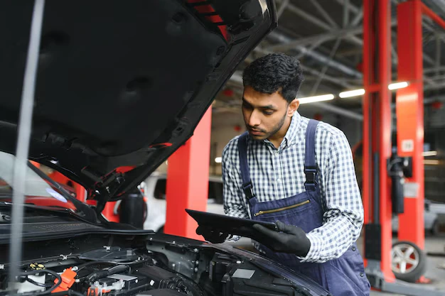

When it comes to maintaining your car, choosing the right service center plays a crucial role in performance, safety, and long-term cost savings. Car owners in Madurai today are increasingly shifting from brand-authorized service centers to multi brand car service centers - and for good reasons.
If you are searching for a reliable, affordable, and professional car service center in Madurai, understanding the benefits of a multi brand service setup will help you make an informed decision.
Madurai has seen rapid growth in vehicle ownership over the past decade. With increasing traffic, road conditions, and extreme weather, regular car maintenance is no longer optional—it is essential.
Traditionally, car owners relied only on authorized service centers. While these centers follow manufacturer standards, they often come with:
This has led to the rise of multi brand car service centers in Madurai, offering high-quality service with better affordability and transparency.
A multi brand car service center is a professional workshop equipped to service all major car brands under one roof. Unlike authorized service centers that handle only one brand, multi brand centers use advanced diagnostic tools and skilled technicians trained across multiple vehicle platforms.
At Zac Motors, cars of different makes, models, and segments—hatchbacks, sedans, SUVs, and premium vehicles—are serviced with equal expertise.
One of the biggest advantages is affordable pricing. Multi brand service centers source genuine or OEM-equivalent spare parts at competitive rates, reducing overall service costs without compromising quality.
For Madurai car owners, this means:
Modern cars are technology-driven. A warning light on your dashboard could be related to sensors, ECU, electrical systems, or engine components.
Multi brand service centers use computerized scanning and diagnostics to:
This is especially useful for running repairs, electrical issues, and AC problems.
If your family owns multiple cars from different brands, a multi brand service center becomes extremely convenient.
You don’t need to visit different authorized centers for different vehicles. Everything—from periodic maintenance to denting and painting—is handled under one roof.
Unlike large authorized workshops where cars are handled in bulk, multi brand service centers focus on personalized service.
Customers receive:
This transparency builds long-term trust—something Madurai customers value highly.
Madurai’s climate and road conditions can take a toll on vehicles. Dust, heat, traffic congestion, and irregular road surfaces accelerate wear and tear.
Ignoring routine maintenance often leads to expensive repairs later.
Car owners in Madurai frequently experience:
A reliable car service center in Madurai can identify and fix these issues before they become major problems.
Today’s cars rely heavily on electronics. Guesswork repairs can lead to unnecessary expenses.
With advanced car scanning and diagnostics, technicians can:
This technology-driven approach ensures accurate and long-lasting repairs.
Madurai’s heat makes car AC performance non-negotiable.
Professional car AC service in Madurai includes:
Regular AC maintenance not only improves comfort but also prevents costly compressor failures.
Many car owners assume detailing and painting are only for looks. In reality, they protect your vehicle.
Benefits of Car Detailing:
Painting & Tinkering Work Helps:
Professional bodywork ensures long-term durability.
Before choosing a service center, check:
A well-equipped multi brand car service center offers better value and peace of mind.
Zac Motors has earned trust by consistently delivering:
From routine servicing to complex repairs, Zac Motors focuses on quality, safety, and customer satisfaction.